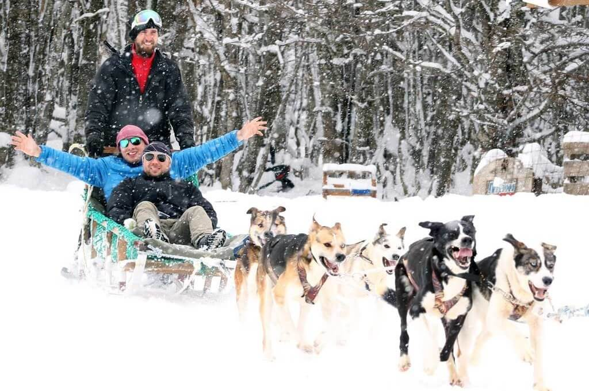
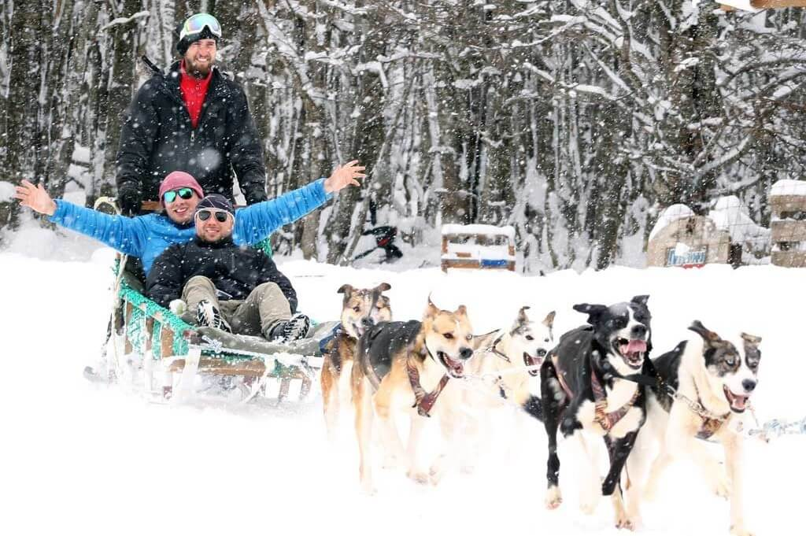

Armamos paquetes de actividades y excursiones para todos los gustos y edades. Las mismas varían dependiendo las estaciones del año. Todas las opciones incluyen almuerzo en el restaurante del hotel. Algunas opciones las podes disfrutar también de noche, ¡no te lo pierdas!
NOTA IMPORTANTE: las actividades y excursiones tienen un cargo adicional a la estadía. Consultá por precios y disponibilidad aquí
Actividades de invierno
Trineo con perros + trecking a Lago Esmeralda
- Disponibilidad: diurna
- Duración: 10 hs a 16 hs
- Edades recomendadas: de 10 años a 50 años.
- Itinerario:
- 10 hs: Inicia el trineo con perros.
- 12.30 hs: Llegada al hotel + almuerzo en el restaurante (incluido)
- 13.30 hs: Trecking hacia Lago Esmeralda. 5 kilómetros aprox.
- 16 hs: Vuelta al hotel.
 

Paseo en moto de nieve + caminata sobre raquetas.
- Disponibilidad: diurna y nocturna
- Duración: 9 hs a 15 hs
- Edades recomendadas: para todas las edades.
- Itinerario: consultar por itinerario.

Día de sky o snowboard en el Cerro Castor
- Disponibilidad: diurna
- Duración: 8 hs a 18 hs
- Edades recomendadas: 5 años a 65 años.
- Itinerario:
- 8 hs: Emprendemos subida hacia el Cerro Castor.
- 12 hs: Almuerzo.
- 17 hs: Merienda.
- 18 hs: Vuelta al hote.
- Opcional: clases con instructor (costo adicional)


Actividades de verano
Paseo en cuatriciclo + caminata guiada por el Valle
- Disponibilidad: diurna y nocturna
- Duración: de 10 hs a 14 hs (diurno) // de 18 hs a 22 hs
- Edades recomendadas: para todas las edades.
- Itinerario: consultar por itinerario.


Trecking por Lago Esmeralda + travesía 4x4
- Disponibilidad: diurna
- Duración: de 10 hs a 16 hs
- Edades recomendadas: de 10 años a 50 años.
- Itinerario:
- 10 hs: Comienzo del trecking hacia Lago Esmeralda. 5 kilómetros.
- 13 hs: Regreso al hotel + almuerzo
- 14 hs: Inicio de travesía 4x4 en UTV
- 16 hs: regreso al Hotel.